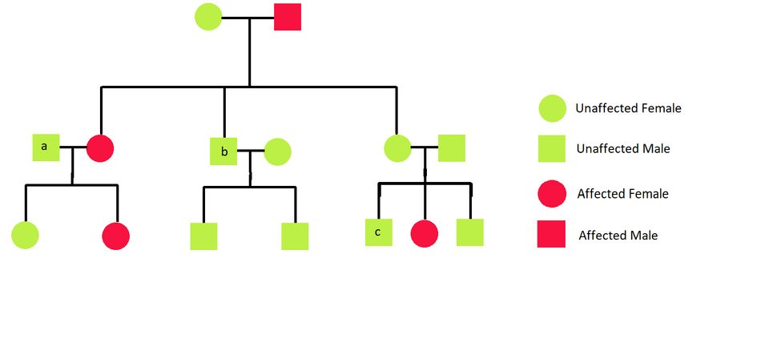

General information only. It does not replace advice from your care team and should not be used to choose a treatment.


How many cancers are inherited
All cancers are caused by changes in the genes of cells, but the vast majority are acquired during life. Only 5 to 10% are due to an inherited variant that greatly increases risk. Cancer is also common, so several cases in a family do not always mean an inherited cause.
The best-known syndromes
| Syndrome | Genes | Main cancers |
|---|---|---|
| Hereditary breast and ovarian cancer | BRCA1, BRCA2, PALB2 and others | Breast, ovary, prostate, pancreas |
| Lynch syndrome | MLH1, MSH2, MSH6, PMS2, EPCAM | Colorectal, endometrium, ovary, stomach, urinary tract |
| Familial adenomatous polyposis | APC | Colorectal (hundreds of polyps) |
| Li-Fraumeni syndrome | TP53 | Sarcomas, breast, brain, adrenal, leukaemias |
| Multiple endocrine neoplasia type 2 | RET | Medullary thyroid carcinoma, phaeochromocytoma |
| Von Hippel-Lindau | VHL | Kidney, haemangioblastomas, phaeochromocytoma |
When to suspect it
- Several relatives on the same side with the same or related cancers.
- Cancers at a young age (for example breast or bowel before 50).
- One person with two different primary cancers.
- Unusual cancers, such as breast cancer in a man, or ovarian cancer.
- Some tumour features, such as loss of mismatch repair proteins in bowel or endometrial cancer.
Genetic counselling
It is a process, not just a test. In a cancer genetics service the family history is reviewed, risk is estimated, and what the test can find and its limits (including variants of uncertain significance) are explained, along with the consequences for the family. Testing is usually done on blood or saliva.
If a variant is found, relatives are offered targeted testing: each child or sibling generally has a 50% chance of having inherited it. Those who do not have it return to the risk of the general population.
What can be done
- Enhanced surveillance: breast MRI, frequent colonoscopies, depending on the syndrome.
- Risk-reducing surgery, such as mastectomy or removal of tubes and ovaries in BRCA carriers, which greatly lowers risk.
- Specific treatments if cancer develops, such as PARP inhibitors.
Genetic tests bought online do not replace this process: they can give false reassurance or false alarms.
See also: Geneticapedia: hereditary cancer, Breast cancer, Ovarian cancer.
Sources
- NCI. Genetic testing for inherited cancer susceptibility syndromes. cancer.gov
- NHS. Genetic and genomic testing. nhs.uk
- Kuchenbaecker KB, et al. Risks of breast, ovarian, and contralateral breast cancer for BRCA1 and BRCA2 mutation carriers. JAMA. 2017;317:2402-2416. doi:10.1001/jama.2017.7112